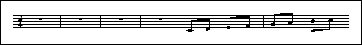
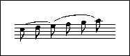
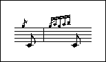
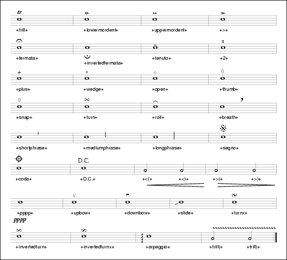
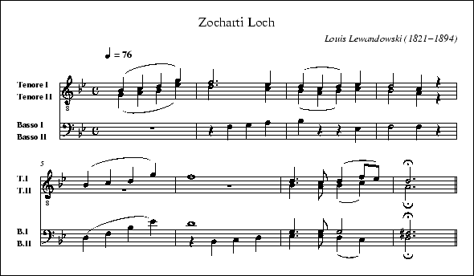
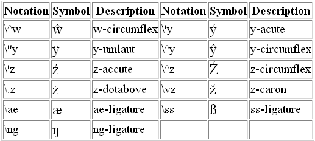
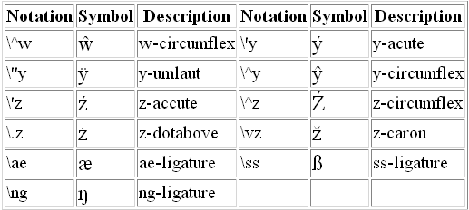

In the following, lines typeset in italics are comments.
This document contains now many png images to illustrate the ABC constructs.
ABC is a music notation system designed to be comprehensible by both people and computers. Music notated in ABC is written using characters; on paper, or in computer files.
This document is a proposal for a new ABC standard. It assumes that most of the features described in the latest ABC draft (1.7.6, 08/05/2000) are accepted.
This description of ABC has been created for those who wish to understand the notation, and for implementers of new ABC applications. It mentions some example tunes that are included at the bottom of this document.
The ABC standard itself deals only with structured, high-level information; how this information should be actually rendered by e.g. a typesetter or a player program, is dealt with in a separate standard, i.e. the ABC Stylesheet specification, included at the bottom of this document.
This document is best read in conjunction with an introduction to the ABC notation. Several are available:
Since the ABC notation system was originally written, a large number of ABC packages (programs which produce printed sheet music or allow for computer performances, search in tune databases, or that analyze tunes in some way) have been developed and/or extended in their functionality. However, not all of them follow this standard absolutely. This document aims at solving, or at least reducing, the problem of incompatibility between applications.
Still, when using ABC it is good to be aware of the existence of such extensions. The extensions that were implemented by the major ABC packages have been described here:
Henrik Norbeck kindly provided a BNF specification of this standard. It is available here:
Of course, the BNF will only fully conform to this standard after it has been finalized.
Questions about this standard or ABC in general can be addressed to the abcusers e-mail list:
This standard is based on the latest ABC draft by Chris Walshaw and John Atchley. The first revision of this draft was kindly prepared by Guido Gonzato. The current document contains parts of texts written by Jean-François Moine, Phil Taylor and James Allwright. It contains contributions by John Chambers, Jack Campin, Arent Storm and Jaysen Ollerenshaw.
The latest version of this document can be found here:
Comments and constructive criticism are very welcome.
An ABC file consists of one or more tune transcriptions. The tunes are separated from each other by blank lines. An ABC file with more than one tune in it, is called an ABC tunebook.
The tune itself consists of a header and a body. The header is composed of several field lines, which are further discussed in the section Information fields. The header should start with an X (reference number) field followed by a T (title) field and finish with a K (key) field. The body of the tune, which contains the actual music in ABC notation, should follow immediately after. As will be explained, certain fields may also be used inside this tune body. If the file contains only one tune the X field may be dropped. It is legal to write a tune without a body. This feature can be used to document tunes without transcribing them.
The file may optionally start with a file header, which is a block of consecutive field lines, finished by a blank line. The file header may be used to set default values for the tunes in the file. Such a file header may only appear at the beginning of a file, not between tunes. Of course, tunes may override the file header settings. However, when the end of a tune is reached, the defaults set by the file header are restored. Applications which extract separate tunes from a file, must insert the fields of the original file header, into the header of the extracted tune. However, since users may manually extract tunes, without taking care of the file header, it is advisable not to use file headers in tunebooks that are to be distributed.
It is legal to write free text before or between the tunes of a tunebook. The free text should be separated from the surrounding tunes by blank lines. Programs that are able to print tunebooks, may print the free text sections. The free text is treated as an ABC string. The free text may be interspersed with directives (see section ABC Stylesheet specification) or with Extended information fields; however, the scope of these settings is limited to the text that appears up to the beginning of the next tune. At that point, the defaults set by the file header are restored.
A '%' symbol will cause the remainder of any input line to be ignored. It can be used to add remarks to the end of an ABC line.
Alternatively, you can use the syntax [r: remarks] to write remarks in the middle of a line of music.
If the last character on a line is a backslash (\), the next line should be appended to the current one, deleting the backslash and the newline, to make one long logical line. There may appear spaces or an end-of-line remark after the backslash: these will be deleted as well. If the user would like to have a space between the two half lines, he should either type one before the backslash, or at the beginning of the next half line.
Example:
gf|e2dc B2A2|B2G2 E2D2|.G2.G2 \ % continuation GABc|d4 B2 w: Sa-ys my au-l' wan to your aul' wan\ Will~ye come to the Wa-x-ies dar-gle?
There is no limit to the number of lines that may be appended together.
Traditionally, one line of ABC notation corresponded closely to one line of printed music.
It is desirable, however, that ABC applications provide the user with an option to automatically reformat the line breaking, so that the layout of the printed sheet music will look optimal.
To force a line break at all times, an exclamation mark (!) can be used. The ! can be inserted everywhere, where a note group could.
The information fields are used to notate things such as composer, meter, etc, in fact anything that isn't music.
Any line beginning with a letter in the range A-Z or a-z and immediately followed by a colon is to be interpreted as a field. Many of these field identifiers are currently unused, so programs that comply with this standard should ignore the occurrence of information fields not defined here. This will make it possible to extend the number of information fields in the future. Some fields are permitted only in the file or tune header and some only in the body, while others are allowed in both locations. Field identifiers A-G and a-g will not be permitted in the body to avoid confusion with note symbols.
Note that if you are intending to use the notation solely for transcribing (rather than documenting) tunes, you can ignore most of of the information fields as all you really need are the X (reference number), T (title), M (meter), L (unit note length) and K (key) fields. If applicable you could add a C (composer), an A (author of lyrics) and a w (words) field. I have included a full list of fields however, for those who wish to understand tunes transcribed by other users.
By far the best way to find out how to use the fields is to look at the example files in section Sample ABC Tunes (in particular English.abc) and try out some examples. Thus rather than describing them in detail, they are summarised in the following table.
The table illustrates how the fields may be used in the tune header and whether they may also be used in the tune body (see section Use of fields within body for details) or in the file header (see section File structure).
| Field name | header | body | file | type | Examples and notes |
|---|---|---|---|---|---|
| A:author of lyrics | yes | yes | S | A:Walter Raleigh | |
| B:book | yes | yes | S | B:O'Neills | |
| C:composer | yes | yes | S | C:Robert Jones, C:Trad. | |
| D:discography | yes | yes | S | D:Chieftains IV | |
| F:file url | yes | yes | S | F:http://a.b.c/file.abc | |
| G:group | yes | yes | S | G:flute | |
| H:history | yes | yes | S | H:This tune said to... | |
| I:instruction | yes | yes | yes | I | I:score (SA) (TB) |
| K:key | last | yes | I | K:G, K:Dm, K:AMix | |
| L:unit note length | yes | yes | I | L:1/4, L:1/8 | |
| M:meter | yes | yes | yes | I | M:3/4, M:4/4 |
| m:macro | yes | yes | yes | I | m: ~n2 = (3o/n/m/ n |
| N:notes (annotation) | yes | yes | yes | S | N:see also O'Neills - 234 |
| O:origin | yes | yes | S | O:UK, Yorkshire, Bradford | |
| P:parts | yes | yes | I | P:A, P:ABAC, P:(A2B)3 | |
| Q:tempo | yes | yes | I | Q:"allegro" 1/4=120 | |
| R:rhythm | yes | yes | yes | S | R:R, R:reel |
| r:remark | yes | yes | yes | - | r:I love ABC |
| S:source | yes | yes | S | S:collected in Brittany | |
| s:symbol line | yes | I | s: +pp+ ** +f+ | ||
| T:title | second | yes | yes | S | T:Paddy O'Rafferty |
| U:user defined | yes | yes | yes | I | U: T = +trill+ |
| V:voice | yes | yes | I | V:4 clef=bass | |
| W:words | yes | yes | S | lyrics after tune | |
| w:words | yes | S | lyrics aligned with tune | ||
| X:reference number | first | I | X:1, X:2 | ||
| Z:transcriber | yes | yes | S | Z:John Smith, j.s@aol.com |
Fields of type S accept free text in the form of an ABC string as argument. Fields of type I expect a special instruction syntax which will be detailed below. The contents of the remark field will be totally ignored.
The following table indicates whether the field contents should be appended or replaced, if a certain field occurs multiple times in the same tune. Some fields have a special rule.
A: append Q: replace B: append R: append (if in header) C: append R: replace (in body) D: append S: append F: replace s: append G: append T: append (if in header) H: append T: begin new section (in body) K: replace U: replace L: replace V:ID replace (if in header) M: replace V:ID switch to indicated voice (in body) m: replace W: append N: append w: append O: append X: only once per tune P: replace (if in header) Z: append P:ID only once (in body)
The X field is used to assign to each tune within a tunebook an unique reference number (which should be a positive integer), for example: X:23. All tune headers should start with a X field, which may be omitted solely if there is only one tune in the file. In that case, the tune is implicitly assigned the number one. There may be only one X field per tune.
Some tunes have more than one title and so this field can be used more than once per tune - the first time will generate the title whilst subsequent usage will generate the alternatives in small print. The T: field can also be used within a tune to name parts of a tune - in this case it should come before any key or meter changes.
By default, the title(s) will be printed centered above the tune, each title on a separate line. Note that is only indicative, users may change the formatting by providing stylesheet directives or setting options in the software they use.
The T field may be empty, in which case nothing is printed.
By default, the composer(s) will be printed right aligned, just below the title, each composer on a separate line.
The geographical origin(s) of a tune.
If possible, enter the data in a hierarchical way, like:
O:Canada, Nova Scotia, Halifax. O:England, Yorkshire, Bradford and Bingley.
Always use , as separator, so that software may parse the field.
This field may especially be used for "traditional" tunes, with no known composer.
By default, the contents of the O field will be appended to the C field, surrounded by parentheses.
By default, the lyricist(s) will be printed left aligned, just below the title, each lyricist on a separate line.
Apart from the normal meters, e.g. M:6/8 or M:4/4, the symbols M:C and M:C| give common time (4/4) and cut time (2/2) respectively. The symbol M:none omits the meter entirely (free meter).
It is also possible to specify a complex meter, e.g. M:(2+3+2)/8, to make explicit which beats should be accented. The parentheses around the numerator are optional.
The example given will be typeset as:
2 + 3 + 2
8
When there is no M: field defined, free meter is assumed.
Note that in free meter, bar lines can be placed anywhere you want.
Specifies the unit note length, i.e. L:1/4 - quarter note, L:1/8 - eighth note, L:1/16 - sixteenth, L:1/32 - thirty-second.
If there is no L: field defined, a unit note length is set by default, based on the meter field M:. This default is calculated by computing the meter as a decimal: if it is less than 0.75 the default unit note length is a sixteenth note; if it is 0.75 or greater, it is an eighth note. For example, 2/4 = 0.5, so, the default unit note length is a sixteenth note, while for 4/4 = 1.0, or 6/8 = 0.75, or 3/4= 0.75, it is an eighth note. For M:C (4/4), M:C| (2/2) and M:none (free meter), the default unit note length is 1/8.
A meter change within the body of the tune will not change the unit note length (unlike one in the header if no L: field is present).
Defines the tempo in terms of a number of beats per minute, e.g. Q:1/2=120 means 120 half-note beats per minute.
There may be up to 4 beats in the definition, e.g:
Q:1/4 3/8 1/4 3/8=40
This means: play the tune as if Q:5/4=40 was written, but print the tempo indication using separate notes as specified by the user.
The tempo definition may be preceded or followed by an optional ABC string, enclosed by quotes, e.g.
Q: "Allegro" 1/4=120 Q: 3/8=50 "Slowly"
It is OK to give a string without an explicit tempo indication, e.g. Q:"Andante".
Older versions of this standard permitted two further formats:
Q: C=120This is no longer part of the standard and should not be used.
and:
Q:120
Meaning: play 120 unit note-lengths per minute. This is not very musical, and its use is to be discouraged, however there are many abc files which employ this format and programs should be prepared to accept it.
Can be used in the header to state the order in which the tune parts are played, i.e. P:ABABCDCD, and then inside the tune to mark each part, i.e. P:A or P:B.
Within the header, a part can be repeated by following it with a number: e.g. P:A3 is equivalent to P:AAA. A sequence can be repeated by using parentheses: e.g. P:(AB)3 is equivalent to P:ABABAB. Nested parentheses are permitted; dots may be placed anywhere within the header P: field to increase legibility: e.g. P:((AB)3.(CD)3)2. These dots are ignored by computer programs.
Please see section Variant Endings and section Lyrics for possible uses of part notation.
The name(s) of the person(s) who transcribed the tune in ABC, and possibly some contact information, like an (e-)mail address or homepage url.
All Z fields that appear within the header are appended and by default should be printed just below the tune.
Contains general annotations, such as references to other tunes which are similar, details on how the original notation of the tune was converted to ABC, etc.
All N fields that appear within the tune are appended and by default should be printed left aligned below the name(s) of the transcriber(s).
Database software may use this field to group together tunes (for example by instruments) for indexing purposes. Other software may safely ignore this field.
Can be used for multi-line stories/anecdotes, all of which will be ignored until the next field occurs.
The key signature should be specified with a capital letter (A-G) which may be followed by a '#' or 'b' for sharp or flat respectively. In addition the mode should be specified. For example, K:C major, K:A minor, K:C ionian, K:A aeolian, K:G mixolydian, K:D dorian, K:E phrygian, K:F lydian and K:B locrian would all produce a staff with no sharps or flats. The spaces can be left out, capitalisation is ignored for the modes and in fact only the first three letters of each mode are parsed so that, for example, K:F# mixolydian is the same as K:F#Mix or even K:F#MIX. As a special case, minor may be abbreviated to 'm'. When no mode is indicated, major is assumed.
This table sums up key signatures written in different ways:
Key Sig Major Minor Mix Dor Phr Lyd Loc
Ion Aeo
7 sharps: C# A#m G#Mix D#Dor E#Phr F#Lyd B#Loc
6 sharps: F# D#m C#Mix G#Dor A#Phr BLyd E#Loc
5 sharps: B G#m F#Mix C#Dor D#Phr ELyd A#Loc
4 sharps: E C#m BMix F#Dor G#Phr ALyd D#Loc
3 sharps: A F#m EMix BDor C#Phr DLyd G#Loc
2 sharps: D Bm AMix EDor F#Phr GLyd C#Loc
1 sharp : G Em DMix ADor BPhr CLyd F#Loc
0 sharps: C Am GMix DDor EPhr FLyd BLoc
1 flat : F Dm CMix GDor APhr BbLyd ELoc
2 flats : Bb Gm FMix CDor DPhr EbLyd ALoc
3 flats : Eb Cm BbMix FDor GPhr AbLyd DLoc
4 flats : Ab Fm EbMix BbDor CPhr DbLyd GLoc
5 flats : Db Bbm AbMix EbDor FPhr GbLyd CLoc
6 flats : Gb Ebm DbMix AbDor BbPhr CbLyd FLoc
7 flats : Cb Abm GbMix DbDor EbPhr FbLyd BbLoc
By specifying K:none, it is possible to use no key signature at all.
The key signatures may be modified by adding accidentals, according to the format K:<tonic> <mode> <accidentals>. For example, K:D Phr ^f would give a key signature with two flats and one sharp, which designates a very common mode in e.g. Klezmer (Ahavoh Rabboh) and in Arabic music (Maqam Hedjaz). Likewise, K:D maj =c or K:D =c will give a key signature with f sharp and c natural. Note that there can be several modifying accidentals, separated by spaces, each beginning with an accidental sign ('__', '_', '=', '^' or '^^'), followed by a letter in lower case.
It is possible to use the format K:<tonic> exp <accidentals> to explicitly define all the accidentals of a key signature. Thus K:D Phr ^f could also be notated as K:D exp _b _e ^f, where 'exp' is an abbreviation of 'explicit'. Again, the note names of the accidentals should be in lower case.
Software that does not support explicit key signatures, should mark the individual notes in the tune with the accidentals that apply to them.
The Scottish highland pipes are highly diatonic, and have the scale G A B ^c d e ^f g a. These are the only notes they play with any accuracy. The highland pipe music thus uses the modes D major and A mixolyian primarily (and also B minor and E dorian).
Therefore there are two additional keys specifically for notating highland bagpipe tunes; K:HP doesn't put a key signature on the music, as is common with many tune books of this music, while K:Hp marks the stave with F sharp, C sharp and G natural. Both force all the beams and stems of normal notes to go downwards, and of grace notes to go upwards.
By default, the ABC tune will be typeset with a treble clef. You can add special clef specifiers to the K: field, with or without a key signature, to change the clef and various other staff properties. K: clef=bass, for example, would indicate the bass clef. See section Clefs for full details.
Note that the first occurence of the K field, which must appear in every tune, finishes the tune header. All following lines are considered to be part of the tune body.
For w: see the section Lyrics. For s: see the section Symbol lines For U: see the section Redefinable symbols. For V: see the section Multiple voices. For r: see the section remarks. For I: see the section ABC Stylesheet specification. For m: see the section macros.
It is often desired to change the key K, meter M, or unit note length L mid-tune. These fields and any other fields which can be legally used within the tune, can be specified as an inline field, by placing them within square brackets in a line of music, e.g.
E2E EFE|E2E EFG|[M:9/8] A2G F2E D2|]
The first bracket, field identifier and colon must be written without intervening spaces. Only one field may be placed within a pair of brackets, however, multiple, bracketed fields may be placed next to each other. Where appropriate, inline fields (especially clef changes) can be used in the middle of a beam without breaking it.
See section Information fields for a list of fields that may appear within the body.
For backward compatibility, it is still allowed to notate tune fields on a line by themselves, between the music lines:
ed|cecA B2ed|cAcA E2ed|cecA B2ed|c2A2 A2:| M:2/2 K:G AB|cdec BcdB|ABAF GFE2|cdec BcdB|c2A2 A2:|
However, the inline format is preferred.
The number of possible ABC information fields is somewhat limited. Furthermore, the one character names of these fields are rather cryptic. To cope with this, the ABC 2.0 standard introduces a new set of information fields, conforming to a new syntax.
These new fields should appear on a line by themselves. They start with the characters %%, possibly followed by spaces, after which the name of the field follows, followed by a space and the contents of the field.
The fields that are defined in this section, may either appear in the file header, in the tune header or in the free text area between tunes, but not in the tune body. Remember: applications which extract separate tunes from a file, must insert the fields of the original file header, into the header of the extracted tune. This is also true for the fields defined in this section.
Example:
%%abc-copyright (C) Copyright John Smith 2003
There may appear multiple copyright fields in the file header and the tune header, that all are appended. The contents of the copyright fields is treated as an ABC string. Among other things this means that "(C)" will be printed as the international copyright symbol.
The contents of the copyright field is finally appended to the contents of the Z field, which by default is printed just below the tune.
Example:
%%abc-version 2.0
Software that exports ABC tunes conforming to this standard, should include a version field.
Later occurrences of the version field, override earlier ones.
Example:
%%abc-creator xml2abc 2.7
The creator field contains the name of the program that created the ABC file, followed by the version number of the program.
Software that exports ABC tunes conforming to this standard, should include a creator field.
Later occurrences of the creator field, override earlier ones.
Example:
%%abc-charset iso-8859-1
This field documents in which character set ABC strings are coded. When no charset is specified, iso-8859-1 (a.k.a. Latin-1) is assumed. This is convenient, since it is also the default charset used in webpages.
Legal values for the charset field are:
iso-8859-1, iso-8859-2, iso-8859-3, iso-8859-4, iso-8859-5, iso-8859-6, iso-8859-7, iso-8859-8, iso-8859-9, iso-8859-10, us-ascii, utf-8.
Software that exports ABC tunes conforming to this standard, should include a charset field if an encoding other than iso-8859-1 is used.
Note that software that exports ABC, should convert all accented characters that could be coded with non-numeric backscape sequences, to the notation discussed in section ABC string. This is to ensure maximum portability. Programs that cannot display the accented letters, can then simply reduce them to the base letter, as is discussed in that section.
All ABC software must be able to handle ABC strings coded in iso-8859-1 and us-ascii. Support for the other charsets is optional. Extensive information about these charsets, can be found here:
It is possible to use different charsets in one file: later occurrences of the charset field, override earlier ones.
Example:
%%abc-include mydefs.abh
Imports the definitions found in a separate ABC Header file (ABH), and inserts them into the file header or tune header.
The file may contain both regular ABC field lines, extended information field lines, stylesheet directives (see section ABC Stylesheet specification) and remark lines, but no other ABC constructs.
Example:
%%abc-edited-by John Smith, www.johnsmith.com
Name and contact information of the person/organization who edited an ABC tunebook, ABC Header file or ABC tune. This may or may not be the same person who originally transcribed the individual tunes in ABC notation.
Multiple occurrences of the field are appended. The contents of the field is treated as an ABC string.
The following letters are used to represent notes using the treble clef:
d'
-c'- ----
b
-a- --- ---- ----
g
------------------------------------f-------------------
e
--------------------------------d-----------------------
c
----------------------------B---------------------------
A
------------------------G-------------------------------
F
--------------------E-----------------------------------
D
---- ---- ---- -C-
B,
---- -A,-
G,
and by extension, the notes C, D, E, F, e' f' g' a' and b' are available. Notes can be modified in length (see Note lengths). Lower octaves are reached by using 2 commas, 3 commas and so on. Higher octaves are written using 2 apostrophes, 3 apostrophes and so on.
Programs should be able to to parse any combinations of , and ' signs appearing after the note. For example C,', should have the the same meaning as C,; while (uppercase) C' should have the same meaning as (lowercase) c.
NB. The English note names C-B, which are used in the ABC system, correspond to the note names do-si, which are used in many other languages: do=C, re=D, mi=E, fa=F, sol=G, la=A, si=B.
The symbols '^', '=' and '_' are used (before a note) to notate respectively a sharp, natural or flat. Double sharps and flats are available with '^^' and '__' respectively.
Throughout this document note lengths are referred as sixteenth, eighth, etc. The equivalents common in the U.K. are sixteenth note = semi-quaver, eighth = quaver, quarter = crotchet and half = minim.
The unit note length for the transcription is set in the L: field, e.g. L:1/8 sets an eighth note as the unit note length. A single letter in the range A-G, a-g represents a note of this length. For example, if the unit note length is an eighth note, DEF represents 3 eighth notes.
Notes of differing lengths can be obtained by simply putting a multiplier after the letter. Thus if the unit note length is 1/16, A or A1 is a sixteenth note, A2 an eighth note, A3 a dotted eighth note, A4 a quarter note, A6 a dotted quarter note, A7 a double dotted quarter note, A8 a half note, A12 a dotted half note, A14 a double dotted half note, A15 a triple dotted half note and so on. If the unit note length is 1/8, A is an eighth note, A2 a quarter note, A3 a dotted quarter note, A4 a half note, and so on.
To get shorter notes, either divide them - e.g. if A is an eighth note, A/2 is a sixteenth note, A3/2 is a dotted eighth note, A/4 is a thirty-second note - or change the unit note length with the L: field. Alternatively, if the music has a broken rhythm, e.g. dotted eighth note/sixteenth note pairs, use broken rhythm markers. Note that A/ is shorthand for A/2 and similarly A// = A/4, etc.
Note lengths that can't be translated to conventional staff notation are legal, but should be avoided.
A common occurrence in traditional music is the use of a dotted or broken rhythm. For example, hornpipes, strathspeys and certain morris jigs all have dotted eighth notes followed by sixteenth notes as well as vice-versa in the case of strathspeys. To support this, ABC notation uses a '>' to mean 'the previous note is dotted, the next note halved' and '<' to mean 'the previous note is halved, the next dotted'. Thus the following lines all mean the same thing (the third version is recommended):
L:1/16 a3b cd3 a2b2c2d2 L:1/8 a3/2b/2 c/2d3/2 abcd L:1/8 a>b c<d abcd

As a logical extension, >> means that the first note is double dotted and the second quartered and >>> means that the first note is triple dotted and the length of the second divided by eight. Similarly for << and <<<.
Note that the use of broken rhythm markers between notes of unequal lengths will produce undefined results, and should be avoided.
Rests can be transcribed with a 'z' or a 'x' and can be modified in length in exactly the same way as audible notes can. z rests are printed in the resulting sheet music, while x rests are invisible, that is not notated in the printed music.
Multi-measure rests are notated using 'Z' (upper case) followed by the number of measures, e.g.
Z4|CD EF|GA Bc

is equivalent to
z4|z4|z4|z4|CD EF|GA Bc
When no number of measures is given, Z is equivalent to a pause of one measure:

'y' can be used to add some more space between the surrounding notes; moreover, chord symbols and decorations can be attached to it, to make them appear between notes. Example:
"Am" +pp+ y
Note that y does not create a rest in the music.
To group notes together under one beam they should be grouped together without spaces. Thus in 2/4, A2BC will produce an eighth note followed by two sixteenth notes under one beam whilst A2 B C will produce the same notes separated. The beam slopes and the choice of upper or lower staffs are generated automatically.
Notes that cannot be beamed, should be treated as if they were always surrounded by space, e.g. if L:1/8 then ABC2DE is equivalent with AB C2 DE.
Back quotes ` may be used freely between beamed notes to increase legibility. They are ignored by computer programs. Thus A2``B``C is interpreted the same way as A2BC is.
Bar line symbols are notated as follows:
If an 'end of repeated section' is found without a previous 'start of repeated section', the music restarts from the beginning of the tune, or from the latest double bar line or end of repeated section.
Note that the notation :: is short for :| followed by |:. The variants ::, :|: and :||: are all equivalent.
By extension, |:: and ::| mean the start and end of a section that is to be repeated three times, and so on.
A dotted bar line can be notated by preceding it with a dot, e.g. '.|'. This may be useful for notating editorial bar lines in music with very long measures. An invisible bar line may be notated by putting the bar line in brackets, e.g. '[|]'. This may be useful for e.g. notating Voice overlay in meter free music.
ABC parsers should be quite liberal in recognizing bar lines. In the wild, bar lines may have any shape, using a sequence of '|' (thin bar line), '[' or ']' (thick bar line), and ':' (dots). Ex: '|[|', '[|:::'.
First and second repeats can be notated with the symbols [1 and [2, e.g.
faf gfe|[1 dfe dBA:|[2 d2e dcB|].
When adjacent to bar lines, these can be shortened to |1 and :|2, but with regard to spaces
| [1
is legal, while
| 1
is not.
Thus, a tune with different ending for the first and second repeats has the general form:
|: common body of tune |1 first ending :|2 second ending ||
Again, note that in many ABC files the |: will not be present.
In combination with P part notation, it is possible to notate more than two variant endings for a section that is to be repeated a number of times.
For example, if the header of the tune contains P:A4.B4 then parts A and B will each be played 4 times. To play a different ending each time, you could write in the tune:
P:A <notes> | [1 <notes> || [2 <notes> || [3 <notes> || [4 <notes> ||
The Nth ending starts with [N and ends with one of '||', ':|' '|]' or '[|'. You can also mark a section as being used for more than one ending e.g.
[1,3 <notes> ||
plays on the 1st and 3rd endings and
[1-3 <notes> ||
plays on endings 1, 2 and 3. In general, '[' can be followed by any list of numbers and ranges as long as it contains no spaces e.g.
[1,3,5-7 <notes> || [2,4,8 <notes> ||
You can tie two notes together either across or within a bar with a '-' symbol, e.g. abc-|cba or abc-cba. More general slurs can be put in with () symbols. Thus (DEFG) puts a slur over the four notes. Spaces within a slur are OK, e.g. ( D E F G ) .
Slurs may be nested:
(c (d e f) g a)

and they may also start and end on the same note:
(c d (e) f g a)
An unnested slur on a singe note, e.g. |c d (e) f g a| is legal, but will be ignored.
A dotted slur may be notated by preceding the opening brace with a dot, e.g. .(cde); it is optional to dot the closing brace. Likewise, a dotted tie can be transcribed by preceding it with a dot, e.g. C.-C. This is especially useful in parts with multiple verses: some verses may require a slur, some may not.
It should be noted that although the tie '-' and slur '()' produce similar symbols in staff notation they have completely different meanings to player programs and should not be interchanged. Ties connect two successive notes of the same pitch, causing them to be played as a single note, while slurs connect the first and last note of any series of notes, and may be used to indicate phrasing, or that the group should be played legato. Both ties and slurs may be used into, out of and between chords, and in this case the distinction between them is particularly important.
Grace notes can be written by enclosing them in curly braces, '{}'. For example, a taorluath on the Highland pipes would be written {GdGe}. The tune 'Athol Brose' (in the file Strspys.abc) has an example of complex Highland pipe gracing in all its glory. Although nominally grace notes have no melodic time value, expressions such as {a3/2b/} or {a>b} can be useful and are legal although some packages may ignore them. The unit duration to use for gracenotes is not specified by the ABC file, but by the package, and might be a specific amount of time (for playback purposes) or a note length (e.g. 1/32 for Highland pipe music, which would allow {ge4d} to code a piobaireachd 'cadence').
To distinguish between appoggiaturas and acciaccaturas, the latter are notated with a forward slash immediately following the open brace, e.g. {/g}C or {/gagab}C:
The presence of gracenotes is transparent to the broken rhythm construct. Thus the forms A<{g}A and A{g}<A are legal and equivalent to A/2{g}A3/2.
These can be simply coded with the notation (2ab for a duplet, (3abc for a triplet or (4abcd for a quadruplet, etc, up to (9. The musical meanings are:
If the time signature is compound (6/8, 9/8, 12/8) then n is three, otherwise n is two.
More general tuplets can be specified using the syntax (p:q:r which means 'put p notes into the time of q for the next r notes'. If q is not given, it defaults as above. If r is not given, it defaults to p. For example, (3:2:2 is equivalent to (3::2 and (3:2:3 is equivalent to (3:2 , (3 or even (3:: . This can be useful to include notes of different lengths within a tuplet, for example (3:2:2 G4c2 or (3:2:4 G2A2Bc and also describes more precisely how the simple syntax works in cases like (3 D2E2F2 or even (3 D3EF2. The number written over the tuplet is p.
Spaces that appear between the tuplet specifier (e.g. (p:q:r) and the following notes are to be ignored.
Staccato marks (a small dot above or below the note head) can be notated by a dot before the note, i.e. a staccato triplet is written as (3.a.b.c
For fiddlers, the letters u and v can be used to denote up-bow and down-bow, e.g. vAuBvA
Other common symbols are available such as
~ Irish roll T trill H fermata L accent or emphasis M lowermordent P uppermordent S segno O coda
However these characters (~.uvTHLMPSO) are just short cuts for commonly used decorations and can even be redefined (see section Redefinable symbols). More generally, symbols can be entered using the syntax +symbol+, e.g. +trill+A4 for a trill symbol (tr). The currently defined symbols (and this list may grow with time) are:
+trill+ "tr" (trill mark)
+lowermordent+ short /|/|/ squiggle with a vertical line through it
+uppermordent+ short /|/|/ squiggle
+mordent+ same as +lowermordent+
+pralltriller+ same as +uppermordent+
+accent+ > mark
+>+ same as +accent+
+emphasis+ same as +accent+
+fermata+ fermata or hold (arc above dot)
+invertedfermata+ upside down fermata
+tenuto+ horizontal line to indicate holding note for full
duration
+0+ - +5+ fingerings
+plus+ left-hand pizzicato, or rasp for French horns
+wedge+ small filled-in wedge mark
+open+ small circle above note indicating open string or
harmonic
+thumb+ cello thumb symbol
+snap+ snap-pizzicato mark, visually similar to +thumb+
+turn+ a turn mark
+roll+ a roll mark (arc) as used in Irish music
+breath+ a breath mark (apostrophe-like) after note
+shortphrase+ vertical line on the upper part of the staff
+mediumphrase+ same, but extending down to the centre line
+longphrase+ same, but extending 3/4 of the way down
+segno+ 2 ornate s-like symbols separated by a diagonal line
+coda+ a ring with a cross in it
+D.S.+ the letters D.S. (=Da Segno)
+D.C.+ the letters D.C. (=either Da Coda or Da Capo)
+dacoda+ the word "Da" followed by a Coda sign
+dacapo+ the words "Da Capo"
+fine+ the word "fine"
+crescendo(+ or +<(+ start of a < crescendo mark
+crescendo)+ or +<)+ end of a < crescendo mark, placed after the last note
+diminuendo(+ or +>(+ start of a > diminuendo mark
+diminuendo)+ or +>)+ end of a > diminuendo mark, placed after the last note
+pppp+ +ppp+ +pp+ +p+
+mp+ +mf+ +f+ +ff+
+fff+ +ffff+ +sfz+ dynamics marks
+upbow+ V mark
+downbow+ squared n mark
By extension, the following decorations have been added: +slide+, +turnx+, +invertedturn+, +invertedturnx+, +arpeggio+, +trill(+ and +trill)+.
Here is a picture of most decorations:
Note that the decorations may be applied to both notes, rests, note groups, and bar lines. If a decoration is to be positioned between notes, it may be attached to the 'y' spacer. Spaces may be used freely between each of the symbols and the object to which it should be attached. An object may be preceded by multiple symbols, which should be printed one over another, each on a different line. For example:
+1+ +3+ +5+ [CEG] +coda+ y +p+ +trill+ C +fermata+|

Players may choose to ignore most of the symbols mentioned above, though they may be expected to implement the dynamics marks, the accent mark and the staccato dot. Default volume is equivalent to +mf+. On a scale from 0-127, the relative volumes can be roughly defined as: +pppp+ = +ppp+ = 30, +pp+ = 45, +p+ = 60, +mp+ = 75, +mf+ = 90, +f+ = 105, +ff+ = 120, +fff+ = +ffff+ = 127.
Applications may allow users to define new symbols in a package dependent way.
Note that symbol names may not contain any spaces, '[', ']', '|' or ':' signs. So, while +dacapo+ is legal, +da capo+ is not.
If an unimplemented or unknown symbol is found, it should be ignored.
Adding many symbols to a line of music can make a tune difficult to read. In such cases, a symbol line (a line that contains only +...+ decorations and "..." chord symbols or annotations) can be used, analogous to a lyrics line. A symbol line starts with 's:', followed by a line of symbols. Matching of notes and symbols follows the rules defined in section Lyrics.
Example:
CDEF | G```AB`c s: "^slow" | +f+ ** +fff+
As a short cut to writing symbols which avoids the +symbol+ syntax (see decorations), the letters H-W and h-w and the symbol '~' can be assigned with the U: field. For example, to assign the letter 'T' to represent the trill, you can write:
U: T = +trill+
You can also use "^text" etc (see Annotations below) in definitions, e.g.
U: X = "^+"
to print a plus sign over notes with 'X' before them.
Symbol definitions can be written in the file header, in which case they apply to all the tunes in that file, or in a tune header, when they apply only to that tune, and override any previous definitions. Programs may also make use of a set of global default definitions, which apply everywhere unless overridden by local definitions. You can assign the same symbol to two or more letters e.g.
U: T = +trill+ U: U = +trill+
in which case the same visible symbol will be produced by both letters (but they may be played differently), and you can de-assign a symbol by writing:
U: T = +nil+
or
U: T = +none+
The standard set of definitions (if you do not redefine them) is:
U: ~ = +roll+ U: T = +trill+ U: H = +fermata+ U: L = +emphasis+ U: M = +lowermordent+ U: P = +uppermordent+ U: S = +segno+ U: O = +coda+ U: u = +upbow+ U: v = +downbow+
Please see section Macros for an advanced macro mechanism.
Chords (i.e. more than one note head on a single stem) can be coded with [] symbols around the notes, e.g.
[CEGc]
produces the chord of C major. They can be grouped in beams, e.g.
[d2f2][ce][df]
but there should be no spaces within a chord. See the tune 'Kitchen Girl' in the file Reels.abc for a simple example.
All the notes within a chord should have the same length. More complicated chords can be transcribed with the & operator, see section Voice overlay.
Some packages allow chords with notes of different lengths. However, currenly the semantics of such chords are not well-defined and differ from package to package.
The chord forms a syntactic grouping, to which the same prefixes and postfixes can be attached as to an ordinary note, except for accidentals. In particular, the following notation is legal:
( "^I" +f+ [CEG]- > [CEG] "^IV" [F=AC]3/2"^V"[GBD]/ H[CEG]2 )

When both inside and outside the chord length modifiers are used, they should be multiplied. I.e. [C2E2G2]3 has the same meaning as [CEG]6.
If the chord contains two notes both of the same length and pitch, such as
[DD]
then it is a unison (e.g. a note played on two strings of a violin simultaneously) and is shown with one stem and two note-heads:

Chord symbols (e.g. chords/bass notes) can be put in under the melody line (or above, depending on the package) using double-quotation marks placed to the left of the note it is sounded with, e.g. "Am7"A2D2.
The chord has the format <note><accidental><type></bass>, where <note> can be A-G, the optional <accidental> can be b, #, the optional <type> is one or more of
m or min minor maj major dim diminished aug or + augmented sus sustained 7, 9 ... 7th, 9th, etc.
and </bass> is an optional bass note.
A slash after the chord type is used only if the optional bass note is also used, e.g., "C/E". If the bass note is a regular part of the chord, it indicates the inversion, i.e., which note of the chord is lowest in pitch. If the bass note is not a regular part of the chord, it indicates an additional note that should be sounded with the chord, below it in pitch. The bass note can be any letter (A-G or a-g), with or without a trailing accidental sign (b or #). The case of the letter used for the bass note does not affect the pitch.
Alternate chords can be indicated for printing purposes (but not for playback) by enclosing them in parentheses inside the double-quotation marks after the regular chord, e.g., "G(Em)".
Programs should treat chord symbols quite liberally.
General text annotations can be added above, below or on the staff in a similar way to chord symbols. In this case, the string within double quotes is preceded by one of five symbols '^', '_', '<', '>' or '@' which controls where the annotation is to be placed; above, below, to the left or right respectively of the following note, rest or bar line. Using the '@' symbol leaves the exact placing of the string to the discretion of the interpreting program. These placement specifiers distinguish annotations from chord symbols, and should prevent programs from attempting to play or transpose them. All text that follows the placement specifier is treated as an ABC string.
Where two or more annotations with the same placement specifier are placed consecutively, e.g. for fingerings, the notation program should draw them on separate lines, with the first listed at the top.
Example:
"<(" ">)" C
Places the note between parentheses.
The order of ABC constructs is: <grace notes>, <chord symbols>, <annotations>/<decorations> (e.g. Irish roll, staccato marker or up/downbow), <accidentals>, <note>, <octave>, ''<note length>'', i.e. ~^c'3 or even "Gm7"v.=G,2.
Tie symbols, '-', should come immediately after a note group but may be followed by a space, i.e. =G,2- . Open and close chord symbols, [], should enclose entire note sequences (except for chord symbols), i.e.
"C"[CEGc]| or |"Gm7"[.=G,^c']
and open and close slur symbols, (), should do likewise, i.e.
"Gm7"(v.=G,2~^c'2)
The W field (uppercase W) can be used for lyrics to be printed separately below the tune.
The w field (lowercase w) in the body, supplies a line of lyrics to be aligned syllable by syllable below the previous line of notes. Syllables are not aligned on grace notes and tied notes are treated as two separate notes; slurred or beamed notes are also treated as separate notes in this context. Note that lyrics are always aligned to the beginning of the preceding music line.
It is possible for a music line to be followed by several w fields. This can be used together with the part notation to create verses. The first w field is used the first time that part is played, then the second and so on.
The lyrics lines are treated as an ABC string. Within the lyrics, the words should be separated by one or more spaces and to correctly align them the following symbols may be used:
Note that if '-' is preceded by a space or another hyphen, it is regarded as a separate syllable.
When an underscore is used next to a hyphen, the hyphen must always come first.
If there are not as many syllables as notes in a measure, typing a '|' automatically advances to the next bar; if there are enough syllables the '|' is just ignored.
Some examples:
w: syll-a-ble is aligned with three notes
w: syll-a--ble is aligned with four notes
w: syll-a -ble (equivalent to the previous line)
w: time__ is aligned with three notes
w: of~the~day is treated as one syllable (i.e. aligned with one note)
but appears as three separate words
gf|e2dc B2A2|B2G2 E2D2|.G2.G2 GABc|d4 B2
w: Sa-ys my au-l' wan to your aul' wan\
Will~ye come to the Wa-x-ies dar-gle?
Please see section Continuation of input lines for the meaning of the backslash (||) character.
If a word starts with a digit, this is interpreted as numbering of a stanza and is pushed forward a bit. In other words, use something like
w: 1.~Three blind miceto put a number before "Three".
A clef line specification may be provided in K: and V: fields. The general syntax is:
[clef=]<clef name>[<line number>][+8 | -8]
[middle=<pitch>] [transpose=<semitones>]
[stafflines=<lines>]
Note that the clef, transpose, middle and stafflines specifiers may be used independent of each other.
Examples:
[K: clef=alto] [K: perc stafflines=1] [K:Am transpose=-2] [V:B middle=d bass]
Note that although this standard supports the drum clef, there is currently no support for special percussion notes.
The middle specifier can be handy when working in the bass clef. Setting K:bass middle=d will save you from adding comma specifiers to the notes. The specifier may be abbreviated to m=.
The transpose specifier is useful for e.g. a Bb clarinet, for which the music is written in the key of C, although the instrument plays it in the key of Bb:
[V:Clarinet] [K:C transpose=-2]
The transpose specifier may be abbreviated to t=.
To notate the various standard clefs, one can use the following specifiers:
| Name | specifier |
|---|---|
| Treble | K:treble |
| Bass | K:bass |
| Baritone | K:bass3 |
| Tenor | K:tenor |
| Alto | K:alto |
| Mezzosoprano | K:alto2 |
| Soprano | K:alto1 |
More clef names may be allowed in the future, therefore unknown names should be ignored. If the clef is unknown or not specified, the default is treble.
Applications may introduce their own clef line specifiers. These specifiers should start with the name of the application, followed a colon, folowed by the name of the specifier.
Example:
V:p1 perc stafflines=3 m=C mozart:noteC=snare-drum
The V: field allows the writing of multi-voice music. In multi-voice ABC tunes, the tune body is divided into several sections, each beginning with a V: field. All the notes following such a V: field, up to the next V: field or the end of the tune body, belong to the voice.
The basic syntax of the field is:
V:ID
where ID can be either a number or a string, that uniquely identifies the voice in question. When using a string, only the first 20 characters of it will be distinguished. The ID will not be printed on the staff; it's only function is to indicate throughout the ABC file, which music line belongs to which voice.
Example:
X:1 T:Zocharti Loch C:Louis Lewandowski (1821-1894) M:C Q:1/4=76 %%score (T1 T2) (B1 B2) V:T1 clef=treble-8 name="Tenore I" snm="T.I" V:T2 clef=treble-8 name="Tenore II" snm="T.II" V:B1 middle=d clef=bass name="Basso I" snm="B.I" V:B2 middle=d clef=bass name="Basso II" snm="B.II" K:Gm % End of header, start of tune body: % 1 [V:T1] (B2c2 d2g2) | f6e2 | (d2c2 d2)e2 | d4 c2z2 | [V:T2] (G2A2 B2e2) | d6c2 | (B2A2 B2)c2 | B4 A2z2 | [V:B1] z8 | z2f2 g2a2 | b2z2 z2 e2 | f4 f2z2 | [V:B2] x8 | x8 | x8 | x8 | % 5 [V:T1] (B2c2 d2g2) | f8 | d3c (d2fe) | H d6 || [V:T2] z8 | z8 | B3A (B2c2) | H A6 || [V:B1] (d2f2 b2e'2) | d'8 | g3g g4 | H^f6 || [V:B2] x8 | z2B2 c2d2 | e3e (d2c2) | H d6 ||
This layout closely resembles printed music, and permits the corresponding notes on different voices to be vertically aligned so that the chords can be read directly from the abc. The addition of single remark lines '%' between the grouped staves, indicating the bar nummers, also makes the source more legible.
Here follows the visible output:
Here follows the audible output:
V: can appear both in the body and the header. In the latter case, V: is used exclusively to set voice properties. For example, the name property in the example above, specifies which label should be printed on the first staff of the voice in question. Note that these properties may be also set or changed in the tune body. The V: properties will be fully explained in the next section.
Please note that the exact grouping of voices on the staff or staves is not specified by V: itself. This may be specified with the %%score stylesheet directive. See section Voice grouping for details. Please see section Instrumentation directives to learn how to assign a General MIDI instrument to a voice, using a %%MIDI stylesheet directive.
Although it is not recommended, the tune body of fragment X:1, could also be notated this way:
X:2 T:Zocharti Loch %...skipping rest of the header... K:Gm % Start of tune body: V:T1 (B2c2 d2g2) | f6e2 | (d2c2 d2)e2 | d4 c2z2 | (B2c2 d2g2) | f8 | d3c (d2fe) | H d6 || V:T2 (G2A2 B2e2) | d6c2 | (B2A2 B2)c2 | B4 A2z2 | z8 | z8 | B3A (B2c2) | H A6 || V:B1 z8 | z2f2 g2a2 | b2z2 z2 e2 | f4 f2z2 | (d2f2 b2e'2) | d'8 | g3g g4 | H^f6 || V:B2 x8 | x8 | x8 | x8 | x8 | z2B2 c2d2 | e3e (d2c2) | H d6 ||
In the example above, each V: label occurs only once, and the complete part for that voice follows. The output of tune X:2 will be exactly the same as the ouput of tune X:1; the source code of X:1, however, is much better readable.
V: fields can contain voice specifiers such as name, clef, and so on. For example,
V:T name="Tenor" clef=treble-8
indicates that voice 'T' will be drawn on a staff labelled "Tenor", using the treble clef with a small '8' underneath. Player programs will transpose the notes by one octave. Possible voice definitions include:
The name specifier may be abbreviated to nm=. The subname specifier may be abbreviated to snm=.
Applications may implement their own specifiers, but must gracefully ignore specifiers they don't understand or implement. This is required for portability of ABC files between applications.
The rules for breaking lines in multi-voice ABC files are the same as described above. Each line of input may end in a backslash (\) to continue it; lyrics should immediately follow in w: lines (if any). See the example tune Canzonetta.abc.
To avoid ambiguity, inline fields that specify music properties should be repeated in each voice. For example,
... P:C [V:1] C4|[M:3/4]CEG|Gce| [V:2] E4|[M:3/4]G3 |E3 | P:D ...
The & operator may be used to temporarily overlay several voices within one measure. The & operator sets the time point of the music back to the previous bar line, and the notes which follow it form a temporary voice in parallel with the preceding one. This may only be used to add one complete bar's worth of music for each &.
Example:
A2 | c d e f g a &\
A A A A A A &\
F E D C B, A, |]

It can also be used to overlay a pattern of chord symbols on a melody line:
B4 z +5+c (3BAG &\ "Em" x2 "G7" x2 "C" x4 |

Likewise, the & operator may be used in w: lyrics and in s: symbol lines, to provide a separate line of lyrics and symbols to each of the overlayed voices:
g4 f4 | e6 e2 &\ (d8 | c6) c2 w: ha-la-| lu-yoh &\ lu- | -yoh

In meter free music, invisible bar line signs '[|]' may be used instead of regular ones.
Each line in the file may end with blank space which will be ignored. For the purpose of this standard, ASCII Tab and ASCII Space characters are equivalent and are both designated with the term 'space.' Applications must be able to interpret end-of-line markers in Unix (<LF>), PC (<CR><LF>), and Macintosh style (<CR>) correctly.
Within the tune body, all the printable ASCII characters may be used for the actual music notation. These are:
!"#$%&'()*+,-./0123456789:;<=>?@
ABCDEFGHIJKLMNOPQRSTUVWXYZ[\]^_`
abcdefghijklmnopqrstuvwxyz{|}~
Of these, the following characters are currently reserved:
# $ * ; ? @
In future standards they may be used to extend the ABC syntax.
To ensure forward compatibility, current software should ignore these characters when they appear inside or between note groups, possibly giving a warning. However, these characters may not be ignored when they appear inside ABC strings or fields.
Example:
@a +pp+ #bc2/3* [K:C#] de?f "@this $2was difficult to parse?" y |**
should be treated as:
a +pp+ bc2/3 [K:C#] def "@this $2was difficult to parse?" y |
The contents of ABC strings may be written using any character set. The default ABC string character set is Latin-1, which is convenient since it is also the default used in webpages. If you would like to use a different character set, such as utf-8, you may find more information in section Charset field.
To write non-English characters in ABC strings, special sequences of characters should be used to avoid portability problems. These sequences start with a backslash (\), followed by an accent and a letter.
accent example how to write it ----------------------------------------------- grave À à è ò \`A \`a \`e \`o acute Á á é ó \'A \'a \'e \'o circumflex  â ê ô \^A \^a \^e \^o umlaut Ä ä ë ö \"A \"a \"e \"o tilde à ã ñ õ \~A \~a \~n \~o cedilla Ç ç \,C \,c slash Ø ø \/O \/o ring Å å \oA \oa ligature ß Æ æ \ss \AE \ae
To get an actual backslash, type \\.
To typeset a macron on a letter x, type \=x. To typeset an ogonek, type \;x. To typeset a caron, type \vx. To typeset a breve, type \ux. To typeset a long Hungarian umlaut, type \:x. Finally, to typeset a dotted letter, type \.x.
Programs that have difficulty typesetting accented letters may reduce them to the base letter. \"y can be reduced to y, \oA can be reduced to A, etc. Ligatures can be reduced by simply ignoring the backslash: \ss becomes ss, \AE becomes AE, etc.
There is a Full table of accented letters in the appendix.
Characters may also be coded by typing \d followed by the decimal code of the character, followed by a semicolon. The meaning of these codes depends on the character set used. Some examples for the default Latin-1 charset: \d163; = £, \d161; = ¡ and \d191; = ¿.
Furthermore, a number of special symbols can be used in ABC strings. To typeset the international copyright symbol, write (C). To typeset a flat sign, write (b). To typeset a sharp sign, write (#). To typeset a natural sign, write (=).
The specifiers $1, $2, $3 and $4 can be used to change the font within an ABC string. The fonts to be used can be indicated with the %%setfont-n stylesheet directive. $0 resets the font to its default value. $$ gives an actual dollar sign. See section Font Settings for full details.
Examples:
%%abc-copyright (C) Fr\'ed\'erique M\"oller "^A((#))" (^)A w: Will~ye come to the $3Wa-x-ies$0 dar-gle?
This standard defines an optional system of macros which is principally used to define the way in which ornament symbols such as the tilde ~ are played (although it could be used for many other purposes).
Software implementing these macros, should first expand the macros defined in this section, and only afterwards apply any relevant U: replacement (see section Redefinable symbols).
When these macros are stored in an ABC Header file (see section Include field), they may form a powerful library.
There are two kinds of macro, called Static and Transposing.
You define a static macro by writing into the tune header something like this:
m: ~G3 = G{A}G{F}G
When you play the tune, the program searches the tune header for macro definitions, then does a search and replace on its internal copy of the text before passing that to the parser which plays the tune. Every occurence of ~G3 in the tune is replaced by G{A}G{F}G, and that is what gets played. Only ~G3 notes are affected, ~G2, ~g3, ~F3 etc. are ignored.
You can put in as many macros as you want, and indeed, if you only use static macros you will need to write a separate macro for each combination of pitch and note-length. Here is an example:
X:50
T:Apples in Winter
S:Trad, arr. Paddy O'Brien
R:jig
E:9
m: ~g2 = {a}g{f}g
m: ~D2 = {E}D{C}D
M:6/8
K:D
G/2A/2|BEE dEE|BAG FGE|~D2D FDF|ABc ded|
BEE BAB|def ~g2 e|fdB AGF|GEE E2:|
d|efe edB|ege fdB|dec dAF|DFA def|
[1efe edB|def ~g2a|bgb afa|gee e2:|
[2edB def|gba ~g2e|fdB AGF|GEE E2||
Here I have put in two static macros, since there are two different notes in the tune marked with a tilde.
A static macro definition consists of four parts:
The target string can consist of any string up to 31 characters in length, except that it may not include the letter 'n', for reasons which will become obvious later. You don't have to use the tilde, but of course if you don't use a legal combination of abc, other programs will not be able to play your tune.
The replacement string consists of any legal abc text up to 200 characters in length. It's up to you to ensure that the target and replacement strings occupy the same time interval (the program does not check this). Both the target and replacement strings may have spaces embedded if necessary, but leading and trailing spaces are stripped off so
m:~g2={a}g{f}g
is perfectly OK, although less readable.
If your tune has ornaments on lots of different notes, and you want them to all play with the same ornament pattern, you can use transposing macros to achieve this. Transposing macros are written in exactly the same way as static macros, except that the note symbol in the target string is represented by 'n' (meaning any note) and the note symbols in the replacement string by other letters (h to z) which are interpreted according to their position in the alphabet relative to n.
So, for example I could re-write the static macro m: ~G3 = G{A}G{F}G as a transposing macro m: ~n3 = n{o}n{m}n. When the transposing macro is expanded, any note of the form ~n3 will be replaced by the appropriate pattern of notes. Notes of the form ~n2 (or other lengths) will be ignored, so you will have to write separate transposing macros for each note length.
Here's an example:
X:35 T:Down the Broom S:Trad, arr. Paddy O'Brien R:reel M:C| m: ~n2 = (3o/n/m/ n % One macro does for all four rolls K:ADor EAAG~A2 Bd|eg~g2 egdc|BGGF GAGE|~D2B,D GABG| EAAG ~A2 Bd|eg~g2 egdg|eg~g2 dgba|gedB BAA2:| ~a2ea agea|agbg agef|~g2dg Bgdg|gfga gede| ~a2 ea agea|agbg ageg|dg~g2 dgba|gedB BA A2:|
A transposing macro definition consists of four parts:
The target string can consist of any string up to 31 characters in length, except that it must conclude with the letter 'n', followed by a number which specifies the note length.
The replacement string consists of any legal abc text up to 200 characters in length, where note pitches are defined by the letters h - z, the pitches being interpreted relative to that of the letter n. Once again you should ensure that the time intervals match. You should not use accidentals in transposing macros (I can't for the life of me think of a way to transpose ~=a3 or ~^G2 which will work correctly under all circumstances, so if you need to do this you must use a static macro.)
An E: field was once used by abc2mtex to explicitly control note spacing; this is no longer neccesary with current formatting algorithms.
The A: field was used to contain area information. Now, the A: field contains the name of the lyrics author, and area information can be stored in the O: field.
The widespread abc2win program used a '!' character to force line breaks, while the previous ABC standard adopted a !...! syntax to indicate decorations.
The abc2win usage obviously conflicted with the !...! style notation for decorations (see section Decorations). Therefore the current standard deprecates the !...! notation in favour of a +...+ style symbol notation.
To support both the deprecated !...! syntax and the '!' line breaks, the following algorithm is proposed:
When encountering a !, scan forward. If you find another ! before encountering any of "|[:]", a space, or the end of line, then you have a decoration, otherwise it is a line break.
Users should avoid using ! line breaks together with the deprecated !...! symbol syntax.
The following fragment of code:
G2G2A4 | (FEF) D (A2G) G|\
M:4/4
K:C
c2c2(B2c2) |
was considered to be equivalent to:
G2G2A4 | (FEF) D (A2G) G|[M:4/4][K:C]c2c2(B2c2) |
Furthermore, the following code:
w: Sa-ys my au-l' wan to your aul' wan\ w: Will~ye come to the Wa-x-ies dar-gle?
was considered to be equivalent to:
w: Sa-ys my au-l' wan to your aul' wan\ Will~ye come to the Wa-x-ies dar-gle?
Music is not only played by humans, but is also conveniently typeset or played by computer programs. The ABC language, however, is a high-level description of music, which only deals with structural information. How this structural information is to be actually rendered by e.g. a typesetter or a player can be controlled using an ABC Stylesheet.
An ABC stylesheet consists of directives which are interspersed in a normal ABC file, or collected in an ABC Header file (see section Include field). These are lines that start with '%%', followed by keywords that give indications to typesetting or player programs. Some examples could be:
%%papersize A4 %%newpage %%setbarnb 10
Alternatively, the directives may be contained in an I: (instruction) field:
I:papersize A4 I:newpage I:setbarnb 10There may be given only one directive per I: field. The inline field notation may be used to give a directive in the middle of a line of music:
CDEFG|[I:setbarnb 10]ABc
If a program doesn't recognise a directive, it should just ignore it.
Predictably, the list of possible directives is long. Applications should provide directives for specifying system and page layout, text annotations, fonts, spacings, voice instruments, transposition, and possibly other details.
It should be stressed that the ABC stylesheet specification is not part of the ABC specification itself. It forms an additional standard. Strictly speaking, ABC applications don't have to conform to the same set of directives. However, it's highly desirable that they do: this arrangement will make the same ABC file portable between different computer systems.
In fact, the ABC standard relates to the ABC Stylesheet specification, as HTML relates to CSS.
Basic syntax:
%%score <voice-id1> <voice-id2> ... <voice-idn>
The score directive specifies which voices should be printed in the score and how they should be grouped on the staves.
Voices that are enclosed by parentheses '()', will go on one staff. Together they form a voice group. A voice that is not enclosed by parentheses forms a voice group on its own, that will be printed on a separate staff.
If voice groups are enclosed by curly braces '{}', the corresponding staves will be connected by a big curly brace printed in front of the staves. Together they form a voice block. This format is used especially for typesetting keyboard music.
If voice groups or braced voice blocks are enclosed by brackets '[]', the corresponding staves will be connected by a big bracket printed in front of the staves. Together they form a voice block.
If voice blocks, or voice groups are separated from each other by a '|' character, continued bar lines will be drawn between the associated staves.
Example:
%%score Solo [(S A) (T B)] {RH | (LH1 LH2)}
If a single voice, surrounded by two voice groups, is preceded by a star (*), the voice is marked to be floating. This means, that the voice won't be printed on it's own staff; rather the software should automatically determine for each note of the voice, whether it should be printed on the preceding staff or on the following staff.
Software that does not support floating voices, may simply print the voice on the preceding staff, as if it were part of the preceding voice group.
Examples:
%%score {RH *M| LH}
%%score {(RH1 RH2) *M| (LH1 LH2)}
String parts in an orchestral work are usually bracketed together and the top two (1st/2nd violins) then braced outside the bracket:
%%score [{Vln1 | Vln2} | Vla | Vc | DB]
Voices that appear in the tune body, but not in the score directive, won't be printed.
When the score directive occurs within the tune body, it resets the music generator, so that voices may appear and disappear for some period of time.
If no score directive is used, all voices that appear in the tune body are printed on separate staves.
See Canzonetta.abc for an extensive example.
%%MIDI voice [<ID>] [instrument=<integer> [bank=<integer>]] [mute]
Assigns a MIDI instrument to the indicated ABC voice. The MIDI instruments are organized in banks of 128 instruments each. Both the instruments and the banks are numbered starting from one.
The General MIDI (GM) standard defines a portable, numbered set of 128 instruments; these are listed in section General MIDI Instruments. The GM instruments can be used by selecting bank one. Since the contents of the other MIDI banks is platform dependent, it is highly recommended to only use the first MIDI bank in tunes that are to be distributed.
The default bank number is one.
Example:
%%MIDI voice Tb instrument=59assigns GM instrument 59 (tuba) to voice 'Tb'.
If the voice ID is ommited, the instrument is assigned to the current voice:
M:C L:1/8 Q:1/4=66 K:C V:Rueckpos %%MIDI voice instrument=53 bank=2 A3B c2c2 |d2e2 de/f/P^c3/d/|d8 |z8 | V:Organo %%MIDI voice instrument=73 bank=2 z2E2- E2AG |F2E2 F2E2 |F6 F2|E2CD E3F/G/|
You can use the keyword mute to mute the specified voice.
Some ABC players can automatically generate an accompaniment based on the chord symbols specified in the melody line. To suggest a GM instrument for playing this accompaniment, use the following directive:
%%MIDI chordprog 20 % Church organ
%%propagate-accidentals not | octave | pitch
When set to not, accidentals apply only to the note they're attached to. When set to octave, accidentals also apply to all the notes of the same pitch in the same octave up to the end of the bar. When set to pitch, accidentals also apply to all the notes of the same pitch in all octaves up to the end of the bar.
The default value is pitch.
%%writeout-accidentals none | added | all
When set to none, modifying or explicit accidentals that appear in the key signature field (K:) are printed in the key signature. When set to added, only the accidentals belonging to the mode indicated in the K: field, are printed in the key signature. Modifying or explicit accidentals are printed in front of the notes to which they apply. When set to all, both the accidentals belonging to the mode and possible modifying or explicit accidentals are printed in front of the notes to which they apply; no key signature will be printed.
The default value is none.
Typesetting programs should accept the set of directives in the next sections. The parameter of a directive can be an ABC string, a logical value '1' (true) or '0' (false), an integer number, a number with decimals (just 'number' in the following), or a unit of length. Units can be expressed in cm, in, and pt (points, 1/72 inch).
The following directives should be self-explanatory.
TODO: ADD EXPLANATIONS.
%%pageheight <length> %%pagewidth <length> %%topmargin <length> %%botmargin <length> %%leftmargin <length> %%rightmargin <length> %%indent <length> %%landscape <logical>
PostScript and PDF are the standard file formats for distributing printable material. For portability reasons, typesetters will use the PostScript font names. The size paramater should be an integer, but is optional.
%%titlefont <font name> <size> %%subtitlefont <font name> <size> %%composerfont <font name> <size> %%partsfont <font name> <size> %%tempofont <font name> <size> %%gchordfont <font name> <size> % for chords symbols %%annotationfont <font name> <size> % for "^..." annotations %%infofont <font name> <size> %%textfont <font name> <size> %%vocalfont <font name> <size> % for w: %%wordsfont <font name> <size> % for W:
The specifiers $1, $2, $3 and $4 can be used to change the font within an ABC string. The font to be used can be specified with the %%setfont-n directives. $0 resets the font to its default value. $$ gives an actual dollar sign.
%%setfont-1 <font name> <size> %%setfont-2 <font name> <size> %%setfont-3 <font name> <size> %%setfont-4 <font name> <size>
%%topspace <length> %%titlespace <length> %%subtitlespace <length> %%composerspace <length> %%musicspace <length> % between composer and 1st staff %%partsspace <length> %%vocalspace <length> %%wordsspace <length> %%textspace <length> %%infospace <length> %%staffsep <length> % between systems %%sysstaffsep <length> % between staves in the same system %%barsperstaff <integer> %%parskipfac <number> % space between parts %%lineskipfac <number> % space between lines of text %%stretchstaff <logical> %%stretchlast <logical> %%maxshrink <number> % shrinking notes %%scale <number>
%%measurefirst <integer> % number of first measure %%barnumbers <integer> % bar numbers every ''n'' measures %%measurenb <integer> % same as %%barnumbers %%measurebox <logical> %%setbarnb <integer> % set measure number
%%text <ABC String> %%center <ABC String> %%begintext %%... %%endtext %%sep %%sep <number 1> <number 2> <number 3> %%vskip %%vskip <number> %%newpage
Notes:
%%continueall <logical> % ignore line breaks %%exprabove <logical> %%exprbelow <logical> %%graceslurs <logical> % grace notes slur to main note %%infoline <logical> % rhythm and origin on the same line %%musiconly <logical> % don't output lyrics %%oneperpage <logical> %%vocalabove <logical> %%withxrefs <logical> % print X: index in title %%writehistory <logical> %%freegchord <logical> % print '#', 'b' and '=' as they are %%printtempo <logical>
Applications may introduce their own directives. These directives should start with the name of the application, followed a colon, folowed by the name of the directive.
Example:
%%noteedit:fontcolor blue
The lack of a well-defined ABC standard wouldn't be a problem, were ABC a human-only notation system. People are smart and flexible (mostly). But when it comes to computer programs, the situation is critical.
Unfortunately, minor variations of the ABC syntax are commonly found. This makes applications slightly incompatible with each other. Obviously, we want ABC files to be readable by as many programs as possible.
Some basic suggestions are:
NOTE: The samples still need to be edited to conform to the standard!
H:This file contains some example English tunes O:E % mark all tunes with an E (English) for the index X:1 % tune no 1 T:Dusty Miller, The % title T:Binny's Jig % an alternative title C:Trad. % traditional R:DH % double hornpipe M:3/4 % meter K:G % key B>cd BAG|FA Ac BA|B>cd BAG|DG GB AG:|\ Bdd gfg|aA Ac BA|Bdd gfa|gG GB AG:| BG G/2G/2G BG|FA Ac BA|BG G/2G/2G BG|DG GB AG:| W:Hey, the dusty miller, and his dusty coat; W:He will win a shilling, or he spend a groat. W:Dusty was the coat, dusty was the colour; W:Dusty was the kiss, that I got frae the miller. X:2 T:Old Sir Simon the King C:Trad. S:Offord MSS % from Offord manuscript N:see also Playford % reference note M:9/8 R:SJ % slip jig N:originally in C % transcription note K:G D|GFG GAG G2D|GFG GAG F2D|EFE EFE EFG|A2G F2E D2:| D|GAG GAB d2D|GAG GAB c2D|[1 EFE EFE EFG|A2G F2E D2:|\ M:12/8 % change meter for a bar [2 E2E EFE E2E EFG|\ M:9/8 % change back again A2G F2E D2|] X:3 T:William and Nancy T:New Mown Hay T:Legacy, The C:Trad. O:Bledington, Gloucestershire % place of origin B:Sussex Tune Book % also in these books B:Mally's Cotswold Morris vol.1 2 D:Morris On % you can hear it on this record P:(AB)2(AC)2A % play the parts in this order M:6/8 K:G P:A % part A D|"G"G2G GBd|"C"e2e "G"dBG|"D7"A2d "G"BAG|"C"E2"D7"F "G"G2:| P:B % part B d|"G"e2d B2d|"C"gfe "G"d2d| "G"e2d B2d|"C"gfe "D7"d2c|\ "G"B2B Bcd|"C"e2e "G"dBG|"D7"A2d "G"BAG|"C"E2"D7"F "G"G2:| T:Slows M:4/4 % change meter L:1/4 % and default note length P:C % part C "G"d2|"C"e2 "G"d2|B2 d2|"Em"gf "A7"e2|"D7"d2 "G"d2|"C"e2 "G"d2|\ M:3/8 L:1/8 "G"B2d|\ M:6/8 "C"gfe "D7"d2c|\ "G"B2B Bcd|"C"e2e "G"dBG|"D7"A2d "G"BAG|"C"E2"D7"F "G"G2:|
M:4/4
O:S
R:Ss
X:1
T:A. A. Cameron's
K:D
e<A A2 B>G d>B|e<A A2 d>g (3fed|e<A A2 B>G d>B|B<G G>B d>g (3fed:|
B<e e>f g>e a>f|B<e e>f g>e (3fed|B<e e>f g>e a>f|d<B G>B d>g (3fed:|
X:2
T:Atholl Brose
K:D
{gcd}c<{e}A {gAGAG}A2 {gef}e>A {gAGAG}Ad|\
{gcd}c<{e}A {gAGAG}A>e {ag}a>f {gef}e>d|\
{gcd}c<{e}A {gAGAG}A2 {gef}e>A {gAGAG}Ad|\
{g}c/d/e {g}G>{d}B {gf}gG {dc}d>B:|\
{g}c<e {gf}g>e {ag}a>e {gf}g>e|\
{g}c<e {gf}g>e {ag}a2 {GdG}a>d|\
{g}c<e {gf}g>e {ag}a>e {gf}g>f|\
{gef}e>d {gf}g>d {gBd}B<{e}G {dc}d>B|\
{g}c<e {gf}g>e {ag}a>e {gf}g>e|\
{g}c<e {gf}g>e {ag}a2 {GdG}ad|\
{g}c<{GdG}e {gf}ga {f}g>e {g}f>d|\
{g}e/f/g {Gdc}d>c {gBd}B<{e}G {dc}d2|]\
M:4/4 O:I R:R X:1 T:Untitled Reel C:Trad. K:D eg|a2ab ageg|agbg agef|g2g2 fgag|f2d2 d2:|\ ed|cecA B2ed|cAcA E2ed|cecA B2ed|c2A2 A2:| K:G AB|cdec BcdB|ABAF GFE2|cdec BcdB|c2A2 A2:| X:2 T:Kitchen Girl C:Trad. K:D [c4a4] [B4g4]|efed c2cd|e2f2 gaba|g2e2 e2fg| a4 g4|efed cdef|g2d2 efed|c2A2 A4:| K:G ABcA BAGB|ABAG EDEG|A2AB c2d2|e3f edcB|ABcA BAGB| ABAG EGAB|cBAc BAG2|A4 A4:|
% canzonetta.abc %%pagewidth 21cm %%pageheight 29.7cm %%topspace 0.5cm %%topmargin 1cm %%botmargin 0cm %%leftmargin 1cm %%rightmargin 1cm %%titlespace 0cm %%titlefont Times-Bold 32 %%subtitlefont Times-Bold 24 %%composerfont Times 16 %%vocalfont Times-Roman 14 %%staffsep 60pt %%sysstaffsep 20pt %%musicspace 1cm %%vocalspace 5pt %%measurenb 0 %%barsperstaff 5 %%scale 0.7 X: 1 T: Canzonetta a tre voci C: Claudio Monteverdi (1567-1643) M: C L: 1/4 Q: "Andante mosso" 1/4 = 110 %%staves [1|2|3] V: 1 clef=treble name="Soprano"sname="A" V: 2 clef=treble name="Alto" sname="T" V: 3 clef=bass name="Tenor" sname="B" %%MIDI program 1 75 % recorder %%MIDI program 2 75 %%MIDI program 3 75 K: Eb % 1 - 4 [V: 1] |:z4 |z4 |f2ec |_ddcc | w: Son que-sti~i cre-spi cri-ni~e w: Que-sti son gli~oc-chi che mi- [V: 2] |:c2BG|AAGc|(F/G/A/B/)c=A|B2AA | w: Son que-sti~i cre-spi cri-ni~e que - - - - sto~il vi-so e w: Que-sti son~gli oc-chi che mi-ran - - - - do fi-so mi- [V: 3] |:z4 |f2ec|_ddcf |(B/c/_d/e/)ff| w: Son que-sti~i cre-spi cri-ni~e que - - - - sto~il w: Que-sti son~gli oc-chi che mi-ran - - - - do % 5 - 9 [V: 1] cAB2 |cAAA |c3B|G2!fermata!Gz ::e4| w: que-sto~il vi-so ond' io ri-man-go~uc-ci-so. Deh, w: ran-do fi-so, tut-to re-stai con-qui-so. [V: 2] AAG2 |AFFF |A3F|=E2!fermata!Ez::c4| w: que-sto~il vi-so ond' io ri-man-go~uc-ci-so. Deh, w: ran-do fi-so tut-to re-stai con-qui-so. [V: 3] (ag/f/e2)|A_ddd|A3B|c2!fermata!cz ::A4| w: vi - - - so ond' io ti-man-go~uc-ci-so. Deh, w: fi - - - so tut-to re-stai con-qui-so. % 10 - 15 [V: 1] f_dec |B2c2|zAGF |\ w: dim-me-lo ben mi-o, che que-sto\ =EFG2 |1F2z2:|2F8|] % more notes w: sol de-si-o_. % more lyrics [V: 2] ABGA |G2AA|GF=EF |(GF3/2=E//D//E)|1F2z2:|2F8|] w: dim-me-lo ben mi-o, che que-sto sol de-si - - - - o_. [V: 3] _dBc>d|e2AF|=EFc_d|c4 |1F2z2:|2F8|] w: dim-me-lo ben mi-o, che que-sto sol de-si-o_.
Standard General MIDI (GM) instrument numbers:
Prog# Instrument Prog# Instrument PIANO CHROMATIC PERCUSSION 1 Acoustic Grand 9 Celesta 2 Bright Acoustic 10 Glockenspiel 3 Electric Grand 11 Music Box 4 Honky-Tonk 12 Vibraphone 5 Electric Piano 1 13 Marimba 6 Electric Piano 2 14 Xylophone 7 Harpsichord 15 Tubular Bells 8 Clavinet 16 Dulcimer ORGAN GUITAR 17 Drawbar Organ 25 Nylon String Guitar 18 Percussive Organ 26 Steel String Guitar 19 Rock Organ 27 Electric Jazz Guitar 20 Church Organ 28 Electric Clean Guitar 21 Reed Organ 29 Electric Muted Guitar 22 Accoridan 30 Overdriven Guitar 23 Harmonica 31 Distortion Guitar 24 Tango Accordian 32 Guitar Harmonics BASS SOLO STRINGS 33 Acoustic Bass 41 Violin 34 Electric Bass(finger) 42 Viola 35 Electric Bass(pick) 43 Cello 36 Fretless Bass 44 Contrabass 37 Slap Bass 1 45 Tremolo Strings 38 Slap Bass 2 46 Pizzicato Strings 39 Synth Bass 1 47 Orchestral Strings 40 Synth Bass 2 48 Timpani ENSEMBLE BRASS 49 String Ensemble 1 57 Trumpet 50 String Ensemble 2 58 Trombone 51 SynthStrings 1 59 Tuba 52 SynthStrings 2 60 Muted Trumpet 53 Choir Aahs 61 French Horn 54 Voice Oohs 62 Brass Section 55 Synth Voice 63 SynthBrass 1 56 Orchestra Hit 64 SynthBrass 2 REED PIPE 65 Soprano Sax 73 Piccolo 66 Alto Sax 74 Flute 67 Tenor Sax 75 Recorder 68 Baritone Sax 76 Pan Flute 69 Oboe 77 Blown Bottle 70 English Horn 78 Skakuhachi 71 Bassoon 79 Whistle 72 Clarinet 80 Ocarina SYNTH LEAD SYNTH PAD 81 Lead 1 (square) 89 Pad 1 (new age) 82 Lead 2 (sawtooth) 90 Pad 2 (warm) 83 Lead 3 (calliope) 91 Pad 3 (polysynth) 84 Lead 4 (chiff) 92 Pad 4 (choir) 85 Lead 5 (charang) 93 Pad 5 (bowed) 86 Lead 6 (voice) 94 Pad 6 (metallic) 87 Lead 7 (fifths) 95 Pad 7 (halo) 88 Lead 8 (bass+lead) 96 Pad 8 (sweep) SYNTH EFFECTS ETHNIC 97 FX 1 (rain) 105 Sitar 98 FX 2 (soundtrack) 106 Banjo 99 FX 3 (crystal) 107 Shamisen 100 FX 4 (atmosphere) 108 Koto 101 FX 5 (brightness) 109 Kalimba 102 FX 6 (goblins) 110 Bagpipe 103 FX 7 (echoes) 111 Fiddle 104 FX 8 (sci-fi) 112 Shanai PERCUSSIVE SOUND EFFECTS 113 Tinkle Bell 121 Guitar Fret Noise 114 Agogo 122 Breath Noise 115 Steel Drums 123 Seashore 116 Woodblock 124 Bird Tweet 117 Taiko Drum 125 Telephone Ring 118 Melodic Tom 126 Helicopter 119 Synth Drum 127 Applause 120 Reverse Cymbal 128 Gunshot
This list was taken from http://www.borg.com/~jglatt/tutr/gm.htm
Note that although the instruments are internally numbered from 0 - 127, the MIDI standard suggests that the user should select them with the numbers 1 - 128, since human beings count from 1 rather than 0.
Programs that have difficulty typesetting accented letters may reduce them to the base letter. \"y can be reduced to y, \oA can be reduced to A, etc. Ligatures can be reduced by simply ignoring the backslash: \ss becomes ss, \AE becomes AE, etc.
Here follows the full table of supported accents:


 

The uppercase variants of accented letters can be obtained by simply putting the last letter in uppercase. Note that \.I produces an uppercase I with a dot on it. The uppercase variants of ligatures can be obtained by putting both letters in uppercase.
To get an actual backslash, type \\.
The table is based on:
End of draft. Features still missing are, at least: repeated tuplets, octava indications, optional accidentals/slurs, microtonal accidentals, tabulatures, guitar chords diagrams, Gregorian chant, ...
This document was generated using AFT v5.09